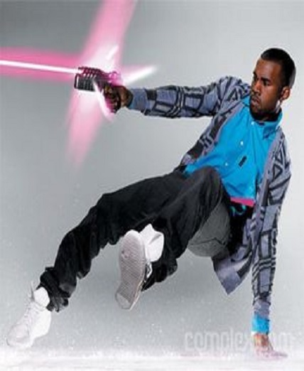

Kanye was a producer for many no-names in the late 90's, most of whom are not even worth mentioning. We could sit here and list Kanye's small-time producing in this time period, but you've never heard of any of these people, we promise. So let's save both our time by fast forwarding to 2000. Kanye became famous through meeting Jay-Z, who quickly noticed Kanye's ass-kissing talent. Kanye always idolized Jay-Z, and told him how much he wanted to be just like him. Jay-Z, although already successful and famous, felt drawn in by Kanye's ass-kissing, which did wonders for Jay's ego. After all, who wouldn't want someone following them around telling them how great they are? This lead to Jay signing Kanye as a producer. Kanye has ever since felt that Jay-Z was his Big Brother.Kanye West's first career productions came on Jay-Z's 2001 debut album The Blueprint, released on September 11, 2001. West produced some of the greatest hits on that album, such as Heart of the City and I.Z.Z.O. Kanye also thought he was “the shit” (but nobody knew of him yet) and starting “smoking them miracle herbs” and developed an addiction to them. Kanye documents his rise to fame in a 13-hour interview named "Last Call" on his 2004 Album The College Dropout. Throughout the course of the interview, he frequently interrupts his story to yell "This is the last call for alcohol!!!", hence the title.
